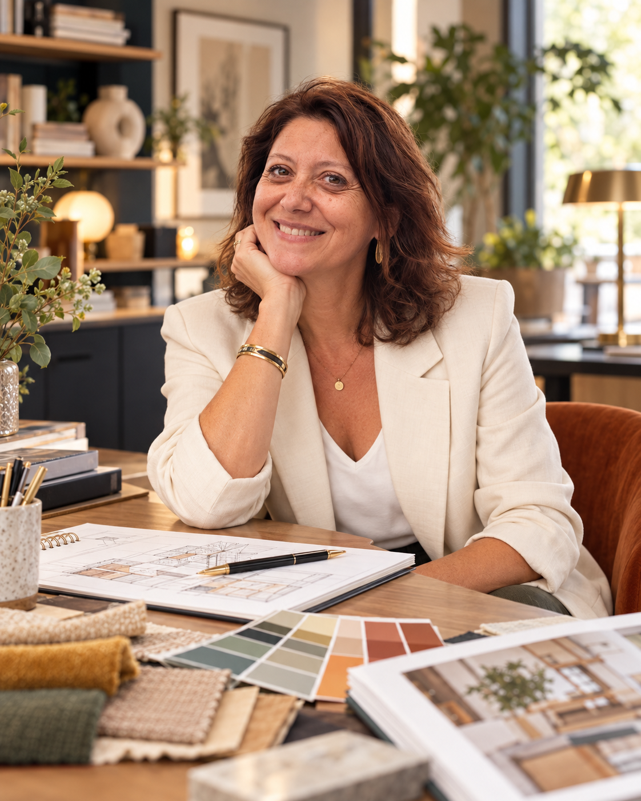

Les Bois aux Daims — SC DESIGN FRANCE
Étude et design intérieur développés par SC DESIGN FRANCE pour le Groupe Pierre & Vacances-Center Parcs.
SC DESIGN FRANCE
Architecte d’intérieur · Hôtellerie & lieux de vie · Design Management
Depuis plus de trente ans, Sonia Chassint conçoit des espaces où l’organisation, les matières, la lumière et le mobilier participent à une même expérience.
Son parcours s’est construit au sein d’agences d’architecture et d’architecture intérieure, en activité indépendante, puis au sein de SC DESIGN FRANCE. Il associe des projets d’hôtels, de villages de vacances, de spas, de bureaux, de logements et d’espaces événementiels, en France et à l’international.
De la première recherche d’ambiance aux dossiers techniques, elle relie l’intention esthétique aux usages et aux conditions de réalisation du projet.
Découvrir notre accompagnement en Design Management
Approche
Un intérieur se compose autant par ses volumes que par les éléments qui l’accompagnent : une matière, une couleur, un éclairage, un tissu ou un meuble.
Sonia Chassint développe une approche attentive à la cohérence de ces choix. Son travail porte sur l’agencement des espaces, la recherche d’ambiances, le design intérieur et la précision des détails nécessaires à leur mise en œuvre.
Son expérience de chef de projet comprend également la coordination des études, la relation avec les clients et, selon les missions, le suivi de chantier.
Lieux d’accueil
L’hôtellerie et les lieux de vacances occupent une place centrale dans son parcours : chambres, suites, cottages, espaces d’accueil, restaurants, bars, spas et espaces de détente.
Ces projets l’ont amenée à travailler sur des lieux aux identités variées, en tenant compte de leur environnement, des attentes des exploitants et de l’expérience des visiteurs.
Étude et design intérieur développés par SC DESIGN FRANCE pour le Groupe Pierre & Vacances-Center Parcs.
Conception et élaboration des dossiers d’exécution des projets d’agencement.
Conception et dossiers d’exécution des agencements de cottages de la gamme VIP DESIGN.
Conception et dossier d’exécution du projet d’agencement.
Étude de nouvelles harmonies de couleurs et de tissus pour les dix-huit chambres et l’accueil du spa.
Participation au concours pour un projet 5 étoiles : espace zen comprenant chambres et spa, boutique et bar.
Dossier de consultation des entreprises et carnet de détails pour un projet d’appart’hôtel comprenant neuf chambres, une suite et un espace de détente avec sauna.
Travail sur un programme comprenant quarante-cinq chambres, dix-huit appartements, une suite, un accueil, un restaurant, un bar et des salles de conférences.
Chef de projet en architecture intérieure pour cet hôtel 4 étoiles : quatre-vingt-onze chambres, deux suites, accueil, restaurant, bar et salles de conférences. Intervention aux phases esquisse, avant-projet définitif, dossier de consultation des entreprises et carnet de détails.
Expérience
Les références ci-dessous correspondent aux missions réalisées au sein des agences mentionnées.
Chef de projet en architecture intérieure : conception, suivi de chantier et relation client.
Chef de projet en architecture intérieure, en charge de la conception et de la relation client pour l’aménagement d’agences bancaires :
Architecte d’intérieur au sein de l’équipe de Philippe et Marie Prost, sur des projets d’hôtellerie, de villages de vacances et de thalassothérapie.
Conakry en Guinée, Saint-François en Guadeloupe et Les Trois-Îlets en Martinique.
Djerba La Fidèle en Tunisie ; Sant’Ambroggio et Cargèse en Corse ; Paradise Island aux Bahamas ; La Caravelle en Guadeloupe ; Vieux Fort à Sainte-Lucie ; Punta Cana en République dominicaine.
Sofitel La Vieille Tour en Guadeloupe et Novotel Carayou en Martinique.
Centre d’esthétique et institut de thalassothérapie du Touquet ; aile 200 de l’institut de thalassothérapie de Quiberon.
Novotel Le Touquet, Sofitel Porticcio en Corse et restaurant diététique du Sofitel de Quiberon.
Autres lieux de vie
Son expérience s’étend également aux bureaux, aux équipements collectifs, aux logements et à la transformation de bâtiments existants.
Conception et réalisation du dossier d’agencement d’espaces de bureaux.
Aménagement des parties communes d’un immeuble de bureaux : halls d’accueil, cafétérias, coursives, restaurant d’entreprise et auditorium. Esquisses, dossier de consultation des entreprises et carnet de détails.
Événementiel
En collaboration avec Fabrice Imbrosciano, Sonia Chassint a également participé à des projets de scénographie et à l’organisation d’événements institutionnels.
Une approche complémentaire
Au sein de SC DESIGN FRANCE, Sonia Chassint et Fabrice Imbrosciano croisent leurs expériences pour relier la stratégie du projet à la conception des espaces.
Sonia apporte une attention particulière aux ambiances, aux matières, au mobilier et aux détails d’agencement. Cette complémentarité permet d’accompagner les projets à plusieurs échelles, de l’identité générale d’un lieu à l’expérience quotidienne de ses usagers.
Contacter SC DESIGN FRANCE